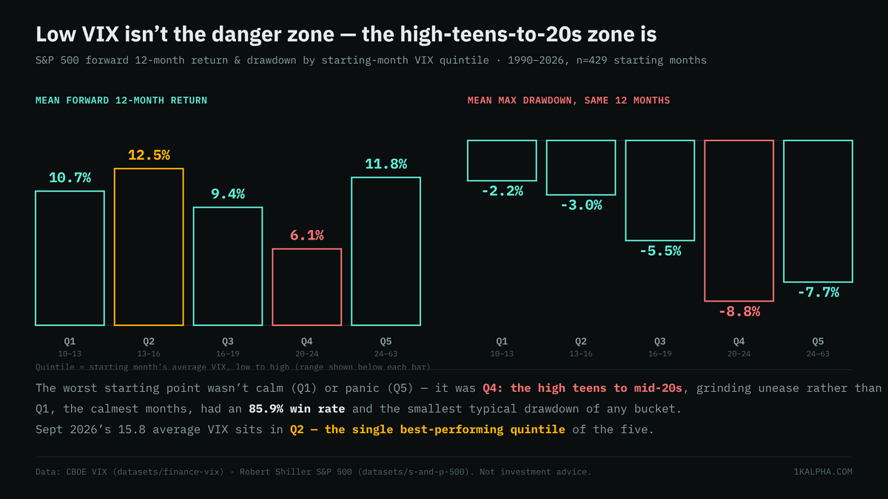
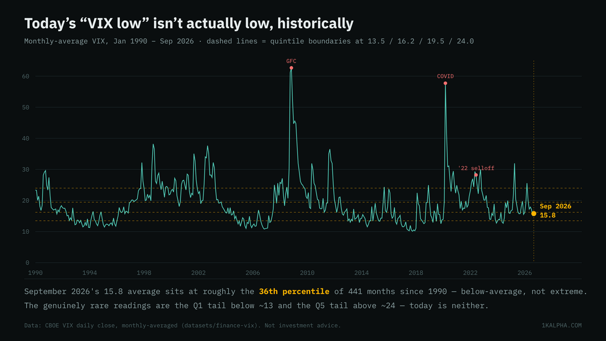

Does a Low VIX Really Predict a Correction? A 36-Year Test
Through the back half of 2026, a theme kept recurring in financial commentary every time the VIX ground down to a fresh low for the year: the market has gotten complacent, protection is cheap because nobody's buying it, and that combination has historically preceded a reckoning. It's a comfortable, intuitive story — "fear gauge" is right there in the VIX's nickname, so a low reading should mean investors aren't afraid of anything, which sounds like exactly the moment something should go wrong. It's also a claim with 36 years of daily data behind it, which means it's checkable rather than just plausible. So I checked it.
Short version: it's backwards. The calmest VIX months in this dataset were followed by the best forward returns and the smallest drawdowns of any bucket, not the worst. The actual danger zone was a level nobody writes headlines about — VIX in the high teens to mid-20s, a grinding, half-worried state rather than either calm or panic. And despite the "2026 low" framing, today's reading isn't even close to historically extreme.
Methodology
I used the CBOE's own daily VIX close, mirrored as CSV by datasets/finance-vix on GitHub, which runs from January 2, 1990 through September 22, 2026. I averaged daily closes into a monthly figure for each of 441 calendar months, then paired each month with Robert Shiller's monthly S&P 500 price level — the same datasets/s-and-p-500 mirror used in the leverage and CAPE posts on this blog, current through September 2026.
For every starting month, I sorted all 441 months into quintiles by that month's average VIX and measured, for each starting month, the forward price return of the S&P 500 (not total return — this mirror's dividend and CPI columns stop being reliably populated after mid-2023, the same gap flagged on the CAPE post; at 1–12 month horizons that gap barely moves the answer the way it would over 10 years, so I used price return uniformly rather than mixing methodologies across the sample) at 1, 3, 6, and 12 months out, plus the maximum drawdown from the starting price at any point within that forward window — i.e. how far below today's level things got before the window closed. 429 starting months (January 1990 through September 2025) have a complete 12-month-forward observation.
The calmest months weren't a warning sign
Bucketed into quintiles by starting-month VIX, the 12-month-forward results:
| Quintile | VIX range | n | Mean fwd ret (12mo) | Median fwd ret | Win rate | Mean maxDD | Worst maxDD |
|---|---|---|---|---|---|---|---|
| Q1 (calmest) | 10.1–13.5 | 85 | +10.7% | +11.4% | 85.9% | −2.2% | −14.6% |
| Q2 | 13.5–16.2 | 85 | +12.5% | +12.9% | 90.6% | −3.0% | −19.1% |
| Q3 | 16.2–19.5 | 85 | +9.4% | +9.4% | 85.9% | −5.5% | −46.0% |
| Q4 | 19.5–24.0 | 85 | +6.1% | +10.5% | 67.1% | −8.8% | −44.8% |
| Q5 (fear) | 24.0–62.7 | 89 | +11.8% | +15.4% | 75.3% | −7.7% | −42.5% |
| All months | 10.1–62.7 | 429 | +10.2% | +11.8% | 80.9% | −5.5% | −46.0% |
Win rate = % of starting months with a positive 12-month-forward return. Mean/worst maxDD = how far below the starting price the index fell at its worst point within the following 12 months, averaged across the bucket (mean) or the single worst case (worst). Nominal price return, S&P 500, 1990–2026.
Q1 — the quietest 85 months in 36 years, VIX averaging under 13.5 — delivered the highest win rate of any bucket (85.9%) and the smallest typical drawdown by a wide margin (−2.2%). That's close to the exact opposite of what the complacency story predicts. If low VIX really meant investors had stopped pricing in risk and were about to get blindsided, Q1 should be the most dangerous bucket to buy into, not the safest.

The real danger zone was the high teens to mid-20s, not the extremes
The pattern isn't "low VIX good, high VIX bad" either — it's not linear at all. The Pearson correlation between starting VIX and forward 12-month return across all 429 months is a weak r = +0.10 (and r = +0.11 at 6 months, +0.07 at 3 months, −0.02 at 1 month) — essentially no linear relationship. That's not a contradiction of the quintile table above; it's a sign the real relationship is shaped like a valley, not a slope, and a single correlation coefficient can't see a valley.
Q4 — VIX averaging roughly 19.5 to 24, the highest level before you'd call it a genuine fear spike — is the worst bucket on every measure: the lowest mean and median forward return, the lowest win rate (67.1%, a full 19 points below Q1's), and a worse mean drawdown than even Q5, the actual panic bucket. That ordering holds up at longer horizons too — I reran the same quintile split at 24 and 36 months forward, and Q4 stays in last place on mean return and win rate at both.
A reading of why: Q1 and Q2 are mostly months where nothing in particular is happening — genuine calm. Q5 is mostly acute crisis — the 2008–09 financial crisis, March 2020, October 2008, bottoms where, by definition, the index had already fallen a long way and didn't have as far left to fall before recovering. Q4 is the zone in between: markets sliding or churning, something clearly wrong, but not yet bad enough to call it panic — a grinding deterioration rather than either state. Historically, that's been the more dangerous place to be long from, not the quiet months or the full-blown selloffs.
The one honest exception, and it matters
There's a real crack in the "calm is safe" reading, and it's worth naming precisely rather than glossing over: I also checked what happens 24 and 36 months out, not just 12, and the single worst outcome in each of the three calmest quintiles traces back to the same few months — Q1's worst 24-month case started May 2007 (−49.9%), Q2's worst started June 2007 (−50.0%), and Q3's worst started October 2007 (−50.8%). All three are the same event: the run-up to the 2008–09 financial crisis, when the VIX sat near multi-year lows for the better part of two years before the bottom fell out.
Where September 2026 actually sits
The VIX's monthly average in September 2026 — the most recent complete month in this dataset — was 15.8, which sits at roughly the 36th percentile of all 441 months since 1990. That places it inside Q2, the single best-performing quintile in the entire table above, not some unprecedented extreme. The dataset's actual lowest close in 2026 was 14.21 on September 22 — its final trading day — which is nowhere near the all-time closing low of 9.14 (November 3, 2017) or even the bottom of Q1's 10.1–13.5 range.

None of this means a correction can't happen from here — nothing in this dataset rules that out, and Q4's own track record is a reminder that things can deteriorate from any starting point. But "VIX hit a 2026 low" and "VIX is at a historically dangerous extreme" are two different claims, and only the first one is actually true of where things stood as of this dataset's last trading day.
Bottom line
- The calmest VIX quintile had the best win rate and the smallest typical drawdown of any bucket in 36 years of data — the opposite of what the "complacency precedes a correction" story predicts.
- The real danger zone has historically been VIX in the high teens to mid-20s — grinding unease, not full calm or full panic — not the extremes on either end.
- The exception that matters: the single worst outcome in each of the three calmest quintiles traces to the same event, the 2007 run-up to the financial crisis — a reminder that a low VIX can't distinguish real calm from calm-before-a-shock in real time.
- September 2026's reading (15.8 average, 36th percentile) sits in the best-performing quintile, not a historical extreme, despite headlines framing it as a "2026 low."
Limitations
- Overlapping windows, not independent samples. Adjacent starting months share 11 of their 12 forward months, so n=429 overstates how much independent information is actually here — these are differences in a historical average, not a result that should be read as formally statistically significant the way an iid sample of that size would be.
- Only a handful of true regime changes in the sample. 36 years contains exactly two systemic financial crises (dot-com, 2008–09) plus the COVID crash and the 2022 selloff. Every quintile's worst-case numbers are driven by a small number of these episodes, not a large independent set of crashes — the dataset simply hasn't lived through very many of them.
- Nominal price return, not total return. Dividends are omitted (for the reason described in Methodology), which understates the absolute return in every bucket by roughly the dividend yield, but shouldn't bias the comparison between quintiles.
- VIX measures options-implied volatility, not fear directly. It reflects options market positioning and hedging demand as much as sentiment — a few of the commentary pieces I read while researching this flagged that popular options-selling and volatility-targeting strategies have structurally suppressed realized VIX readings over the past decade, independent of how complacent investors actually are. That's a real, unresolved debate this backtest can't settle.